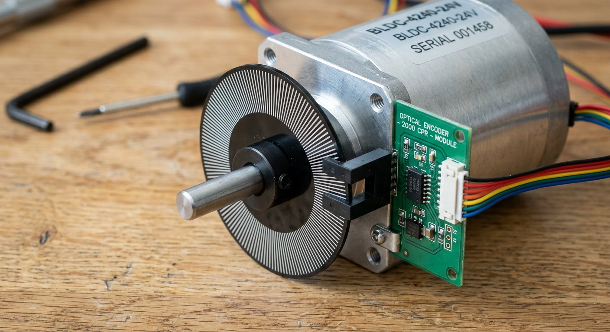

Qué cubre esta guía
Por qué la retroalimentación importa
Un servo estándar estima su posición con un potenciómetro de baja precisión y no informa el valor real; un motor paso a paso no sabe dónde está si pierde pasos. El encoder mide la posición real de la articulación y se la entrega al controlador, que así puede corregir, detectar bloqueos y lograr repetibilidad.
La diferencia práctica: sin encoder, el robot asume que llegó donde se le ordenó; con encoder, el robot verifica que llegó y corrige si no. Esa verificación es la base del control de lazo cerrado y de la precisión industrial.
Incremental vs. absoluto
| Aspecto | Incremental | Absoluto |
|---|---|---|
| Qué entrega | Desplazamiento (pulsos) | Posición única por ángulo |
| Tras apagar | Pierde la referencia | Recuerda la posición |
| Costo | Bajo | Alto |
| Complejidad | Simple (contador) | Mayor (protocolo) |
El incremental requiere homologar (buscar una posición de referencia) al encender; el absoluto conoce su ángulo de inmediato. Para brazos caseros, el incremental es suficiente y mucho más barato; el absoluto se reserva para sistemas que no pueden perder la referencia.
Óptico vs. magnético
- Óptico: disco con ranuras y sensor de luz. Alta resolución, pero sensible al polvo y al aceite que tapan las ranuras.
- Magnético: imán en el eje y sensor de campo magnético. Robusto frente a suciedad y vibración, compacto y económico.
La señal en cuadratura
Un encoder en cuadratura tiene dos canales, A y B, desfasados 90 grados. Al leer ambos, el controlador no solo cuenta pulsos, sino que determina la dirección del giro comparando cuál canal cambia primero.
Giro en un sentido: A cambia primero que B
Giro en el contrario: B cambia primero que A
Además, contar los flancos de ambos canales duplica o
cuadruplica la resolucion (decodificacion x2 o x4).Este desfase es el estándar en robótica: sin cuadratura solo sabrías "cuánto giró", pero no "hacia dónde", y no podrías controlar una articulación de forma confiable.
Lectura con interrupciones en Arduino
Leer el encoder por encuesta (polling) en el loop pierde pulsos cuando el eje gira rápido. La solución son las interrupciones externas: cada flanco del canal A dispara una función que actualiza el contador al instante, sin importar qué esté haciendo el programa.
// Encoder en cuadratura con interrupciones
const int PIN_A = 2; // canal A (interrupcion 0)
const int PIN_B = 3; // canal B
volatile long posicion = 0;
void ISR_encoder() {
// Si A cambio, mira B para saber la direccion
if (digitalRead(PIN_B) == HIGH) {
posicion++; // giro en un sentido
} else {
posicion--; // giro en el sentido contrario
}
}
void setup() {
pinMode(PIN_A, INPUT_PULLUP);
pinMode(PIN_B, INPUT_PULLUP);
attachInterrupt(digitalPinToInterrupt(PIN_A), ISR_encoder, CHANGE);
Serial.begin(115200);
}
void loop() {
Serial.println(posicion);
delay(100);
}La variable volatile le indica al compilador que puede cambiar en cualquier momento, y la interrupción en CHANGE captura cada flanco. Para resoluciones más altas o varios encoders, usa un Arduino Mega (más interrupciones) o un contador de hardware dedicado.
Lazo cerrado con PID
Con la posición medida por el encoder, el lazo cerrado compara contra la posición deseada y calcula el error. El PID genera la señal de control a partir de tres términos:
- Proporcional (Kp): corrige según el error actual; define la rapidez de respuesta.
- Integral (Ki): elimina el error estacionario acumulado; asegura que llegue exacto.
- Derivativo (Kd): suaviza la respuesta y evita oscilaciones.
// PID simplificado para una articulacion
float Kp = 1.0, Ki = 0.1, Kd = 0.05;
float errorAnterior = 0, integral = 0;
int calcularPID(long objetivo, long posicionActual) {
float error = objetivo - posicionActual;
integral += error; // termino integral
float derivativo = error - errorAnterior; // termino derivativo
errorAnterior = error;
float salida = Kp * error + Ki * integral + Kd * derivativo;
// limita la salida al rango del motor (por ejemplo -255 a 255)
return constrain((int)salida, -255, 255);
}Ajustar Kp, Ki y Kd es un arte: sube Kp hasta que responda rápido sin oscilar, agrega Ki para eliminar el error residual, y Kd para amortiguar. Este mismo algoritmo es el corazón del control de posición en la robótica industrial.
Problemas comunes y soluciones
| Síntoma | Causa probable | Solución |
|---|---|---|
| El contador pierde pulsos | Lectura por polling o interrupción lenta | Usar interrupciones externas en CHANGE |
| El contador va hacia atrás | Canales A y B invertidos | Intercambiar los canales o invertir el signo |
| Lecturas erráticas | Rebote eléctrico o pull-up faltante | Usar INPUT_PULLUP y filtrado |
| Pierde la posición al reiniciar | Encoder incremental sin homologación | Agregar rutina de referencia al inicio |
| El motor oscila sin llegar | Kp muy alto o Kd bajo | Bajar Kp y subir Kd gradualmente |
Conclusión
El encoder convierte un brazo robótico de "motor que apunta" a "articulación que se sabe": mide la posición real, permite corregir con un PID y detecta bloqueos y colisiones. Con la lectura por interrupciones y un lazo cerrado bien ajustado, tu brazo gana la repetibilidad que distingue a un robot serio. El complemento natural es medir también la interacción con el entorno usando sensores de fuerza-torque.
Preguntas frecuentes
¿Por qué un brazo robótico necesita encoders si los servos ya saben su posición?
Los servos estándar estiman su posición con un potenciómetro interno de baja precisión y no informan el valor real, y los motores paso a paso directamente no saben dónde están si pierden pasos. El encoder mide la posición real de la articulación y la entrega al controlador, lo que permite corregir errores, detectar bloqueos o colisiones y lograr repetibilidad. En un brazo serio, el servo o motor ejecuta y el encoder verifica: esa es la base del control de lazo cerrado que hace predecible al robot.
¿Cuál es la diferencia entre un encoder incremental y uno absoluto?
Un encoder incremental genera pulsos a medida que el eje gira y entrega el desplazamiento relativo: el controlador cuenta los pulsos desde un punto de referencia, pero si se corta la energía, la posición se pierde y hay que re-homologar. Un encoder absoluto entrega una lectura única para cada ángulo del eje, de modo que la posición se conoce de inmediato al encender, sin necesidad de referencia. Los incrementales son más baratos y comunes; los absolutos se usan cuando no se puede perder la referencia tras un apagado.
¿Encoder óptico o magnético?
El encoder óptico usa un disco con ranuras y un sensor de luz, ofrece alta resolución pero es sensible al polvo y al aceite, que pueden tapar las ranuras. El encoder magnético usa un imán en el eje y un sensor que mide la orientación del campo magnético, es robusto frente a suciedad y vibración, y suele ser más compacto y barato. Para brazos robóticos caseros, los encoders magnéticos son la opción más práctica por su durabilidad; los ópticos brillan en entornos limpios donde se necesita máxima resolución.
¿Qué es la señal en cuadratura de un encoder?
Un encoder en cuadratura tiene dos canales (A y B) desfasados 90 grados eléctricos. Al leer ambos canales, el controlador no solo cuenta los pulsos, sino que determina la dirección del giro comparando cuál canal cambia primero. Este desfase es lo que permite saber si el eje gira hacia un lado o hacia el otro, y además duplica o cuadruplica la resolución efectiva (decodificación x2 o x4) al contar los flancos de ambos canales. La lectura en cuadratura es el estándar para encoders rotatorios en robótica.
¿Qué es el lazo cerrado con PID en una articulación?
El lazo cerrado compara la posición medida por el encoder con la posición deseada y calcula un error. El controlador PID genera la señal de control a partir de tres términos: el proporcional (corrige según el error actual), el integral (elimina el error estacionario acumulado) y el derivativo (suaviza la respuesta y evita oscilaciones). Ajustando las tres constantes Kp, Ki y Kd, la articulación alcanza la posición objetivo con rapidez y sin oscilar, compensando la carga y las perturbaciones. Es el algoritmo de control más usado en robótica industrial.
Este artículo es contenido editorial independiente: no contiene ubicaciones patrocinadas ni enlaces de afiliado. Si en futuras actualizaciones se agregan enlaces a proveedores de componentes, serán identificados explícitamente. El código y las conexiones son referenciales y deben adaptarse y probarse con tu propio hardware. Si detectas un error en esta guía, por favor avísanos.
Sigue aprendiendo
Completa el lazo de control midiendo la interacción con el entorno en la guía de Sensores de Fuerza-Torque, o repasa los servos inteligentes que ya traen retroalimentación integrada.
Fuentes primarias y lecturas recomendadas
Referencias que sustentan los conceptos generales de la guía. Las especificaciones exactas dependen del encoder utilizado.
- Arduino Reference — attachInterrupt()
- Arduino Reference — Variables volatile
- Arduino Libraries — Librería Encoder (Paul Stoffregen)
Enlaces revisados: 13 de agosto de 2026.